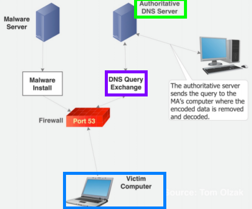
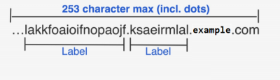
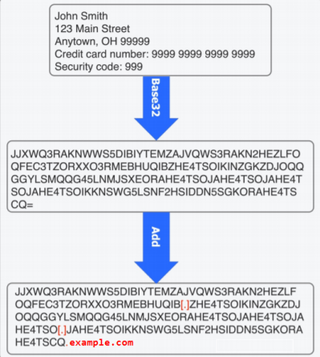

DNS tunneling Data Exfiltration
DNS
ports (port 53) are a stealthier exfiltration way because the DNS protocol is often less
monitored in comparison to other Internet protocols (ex: HTTP, FTP, and mail transfer protocols) because create
lesser risks and because block UDP port 53 traffic would break most, if not all, network communication.
Anyway
a
DNS tunneling can be discovered because can cause a
significant change in the DNS traffic with regards to:
• volume
• messages length (queries that have
more than 64 characters can be suspicious)
• shorter mean time between messages
The core techniques used by all DNS
tunneling utilities include:
•
server side component (authoritative DNS server) The Malicious
actors(MA) registers a
domain (example.com) and creates an authoritative DNS
server for that domain
•
client side component (Victim computer)
hosts the other end of the tunnel. This could be an endpoint in a security controlled enterprise environment
•
DNS query exchange query
type and
encoding type greatly effects the amount of data
that is possible transmit for each query.
In a network statistically these are the query type used: TXT 1–2%
of all traffic, CNAME 20–30%, AAAA 25%, A 38–48%.
It is possible to use different
types of DNS queries to transmit the data encoded:
◇
A query → maps a domain name to an ipv4 address → max ~29-bytes per query
Each label in the
can be up to 63 characters(~4-bytes) and the entire FQDN can be max 253 characters. The encoded data is encoded in
the labels.
  ◇
TXT query → used to return text
data → 255-byte per query
TXT records are typically utilized as the size of this field as we can see allows a
larger amounts of data to be transferred in a single request compared to A, or AAAA records. Moreover is possible to
use multiple strings in a single DNS query, but this would increase the size of the record, making it easily
detectable by DNS firewalls (
https://kb.isc.org/docs/aa-00356)
◇
CNAME query → Canonical Names – specify aliases that can be used instead of the original one.
More stealthier than TXT because more often used but more difficult to use. To be stealthy we have to limit the
length of the query to 16 byte.
•
Encoding Types for the data in the DNS
query ◇ base16 → each character of base16 encoded data in the subdomain represents 4-bits (.5 bytes)
of the data.
◇ base32 → each character of base32 encoded data in the subdomain represents 5-bits (.625 bytes)
of the data.
◇ base64 → each character of base64 encoded data in the subdomain represents 6-bits (.75 bytes)
of the data.
Bibliography:
•
https://www.researchgate.net/publication/336364940_DNS_Tunneling_Identification_and_Defense•
https://citeseerx.ist.psu.edu/viewdoc/download?doi=10.1.1.727.1484&rep=rep1&type=pdf•
http://www.hstabstractbook.org/index_htm_files/c-PID6173081.pdf•
https://www.giac.org/paper/gcia/1116/detecting-dns-tunneling/108367•
https://learn-umbrella.cisco.com/i/775902-dns-tunneling/0?